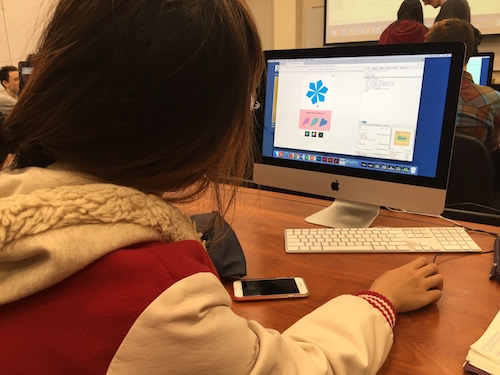

To be honest I was really nervous about the audience testing because my app is still very much in development and I didn't feel that I had enough functionalities im place for my user to test. Iris was really sweet and gave a lot of constructive feedback. She mentioned that the buttons were a little too small for the user to see or to touch on a mobile device. She also mentioned that the colors would be better if they were matched with the positioning on the scroll bar for the color section of the app. She also wanted a clear hierarchy for the buttons and felt that it was a bit confusing for her. She didn't know what to do when she was done making her flower so I have to make that adjustment to the user flow. I am glad that I was able to get feedback from both Iris and Glenda on my project and areas that I could improve. Overall, both approved on the concept and thought the outcome will be engaging.
